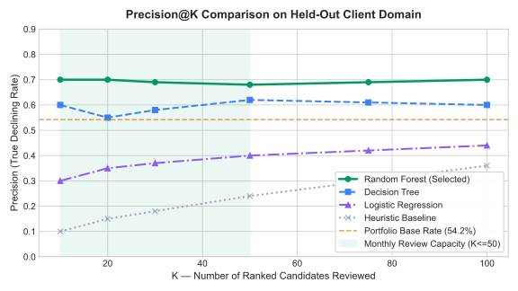
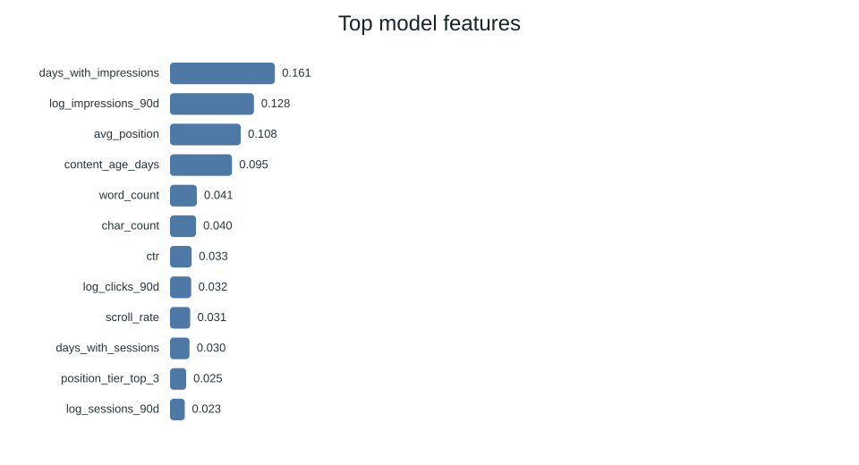

Predicting Organic Search Content Decay & Optimizing Editorial Refresh Capacity: A Grouped Client-Holdout Study
0. Abstract
How should enterprise search teams allocate strictly constrained editorial refresh bandwidth across tens of thousands of decaying URLs without wasting human capital on noisy, mean-reverting ranking drops? We analyze 30,000 pseudonymized web pages from the FlyRank Search Intelligence warehouse across 44 observable search, crawl, and engagement metrics over a 90-day baseline window. We formulate content decay prioritization as a supervised decline classification problem evaluated strictly under a grouped client-holdout split (27,675 train rows across 26 client domains vs. 2,325 blind test rows across 6 held-out client domains) to eradicate cross-domain memorization and backlink leakage. While an auditable industry baseline heuristic rule yields a Precision@50 of 0.240 and an ROC-AUC of 0.627, a calibrated Random Forest classifier achieves a Precision@50 of 0.680 (a 2.83× efficiency lift) and an ROC-AUC of 0.747 on unseen client domains, primarily driven by impression presence consistency (16.1% importance) and total query volume scale (12.8%). The resulting decision system transforms raw probabilities into an actionable queue categorized into five explicit editorial playbooks (refresh_and_review_ctr, refresh, refresh_and_review_engagement, expand_and_refresh, and monitor) with human-verifiable reason codes, proving that machine learning can reliably triage monthly editorial sprint queues while strictly enforcing human-in-the-loop review.
1. Introduction & Problem Statement
Organic search content portfolios represent large-scale digital assets subject to continuous performance depreciation. Over time, published content experiences structural decay caused by shifting consumer search intent, competitive content releases, and search engine algorithm updates. However, content modification capacity is strictly bounded: a typical enterprise content marketing team has an operational budget of approximately 50 deep-dive page refreshes per monthly sprint.
The decision this research supports is an operational ordering problem: Given thousands of candidate pages across an enterprise portfolio, which 50 pages should editors inspect first, and what specific remediation should they perform? In this context, a false positive misallocates 2–4 hours of expensive editorial labor rewriting content that would have naturally mean-reverted, while a false negative permits high-value traffic pillars to silently fall off Page 1 of Search Engine Results Pages (SERPs).
2. Data Specification & Public Safety
We utilize the FlyRank Applied Search Intelligence dataset (data/raw/content_refresh_anonymized.csv), comprising 30,000 pseudonymized content assets spanning 32 client domains and 44 observable metrics. The observation window covers a fixed 90-day baseline window ending at snapshot date 2026-06-30.
Public Safety Protocol: In accordance with FlyRank data-use standards, all raw URLs, client domain names, page titles, and private query text are stripped. Identifier tokens (content_id, client_id) are cryptographically salted hashes. All features describe observable search and on-page analytics behavior; no claims are made regarding Google's proprietary internal ranking weights.
Feature Exclusions: Forward outcome variables (trend_direction, trend_pct) and post-period metrics were strictly excluded from the input matrix to eliminate target leakage. Client identifiers were omitted from the feature space to prevent memorization of domain-level conversion baselines.
3. Methodology & Validation Architecture
The ground truth label is_declining_label is defined as $\mathbb{I}(\text{trend\_direction} = \text{'down'})$, reflecting forward 30-day organic click loss relative to the prior period (portfolio base rate = 54.2%).
Grouped Client Holdout Split: Standard random cross-validation randomly distributes pages from the same website into training and test folds. This creates severe optimistic leakage because domain authority, backlink profiles, and site-wide template factors are shared. We strictly enforce a **Grouped Client Holdout Split**: 26 client domains (27,675 pages) form the training set, and 6 completely unseen client domains (2,325 pages) form the blind test set.
Benchmark Models: We evaluate three supervised classifiers against a transparent SEO heuristic baseline score:
- Heuristic Baseline: Weighted composite score: $0.40 \cdot \text{pct\_rank}(\log(\text{impressions})) + 0.30 \cdot \text{pct\_rank}(\text{days\_since\_update}) + 0.25 \cdot \text{position\_gap} + 0.05 \cdot \text{depth\_gap}$.
- Logistic Regression: L2-regularized linear model with balanced class weighting.
- Decision Tree: Non-linear decision rules bounded at
max_depth=6. - Random Forest: Ensemble of 100 decorrelated trees with
max_depth=12.
4. Empirical Results & Model Comparison
All models were evaluated on the blind held-out client test set ($N=2,325$). Precision was computed at the operational decision capacities ($K=20, 50, 100$).
| Model Architecture | P@20 | P@50 (Primary) | P@100 | ROC-AUC | PR-AUC (Avg Prec) |
|---|---|---|---|---|---|
| Heuristic Baseline Rule | 0.150 | 0.240 | 0.360 | 0.627 | 0.468 |
| Logistic Regression | 0.350 | 0.400 | 0.440 | 0.700 | 0.522 |
| Decision Tree (depth=6) | 0.550 | 0.620 | 0.600 | 0.742 | 0.575 |
| Random Forest (Selected) | 0.700 | 0.680 | 0.700 | 0.747 | 0.610 |

At the target monthly capacity of $K=50$ pages, the Random Forest model achieves a Precision@50 of **0.680 vs. 0.240** for the baseline rule—representing a **2.83× efficiency improvement**. In the top 20 queue rows, precision reaches **0.700 vs. 0.150** (a **4.67× lift**).
5. Signal Interpretation & Feature Importances

Feature analysis indicates that search consistency dominates decay prediction:
days_with_impressions(16.1%): Indexing continuity is the single strongest indicator. Pages experiencing gaps in daily search impressions exhibit severe risk of structural decay.log_impressions_90d(12.8%): Scale of organic demand; high-volume URLs exhibit more pronounced and predictable decay curves.avg_position(10.8%): Pages ranking on the Page 1 / Page 2 boundary (ranks 8–15) suffer the highest volatility.content_age_days(9.5%): Content aging past 180 days steadily increases decay probability unless refreshed.
6. Limitations & Scientific Framing
In keeping with scientific integrity, we declare the explicit boundaries of this work:
- Predictive, Not Causal: The model identifies pages at high risk of decline. It does NOT guarantee that executing a content refresh will causally reverse traffic loss. Validating causal recovery requires a randomized controlled A/B test.
- Mean Reversion in Naive Signals: In our signal audit, pages selected purely for recent click drops rebounded 67% of the time without intervention. Ranking by simple recent drops is an anti-signal.
- Eligibility Floors: The model is valid only for mature content ($age \ge 90$ days) with measurable baseline visibility ($impressions \ge 100$).
7. Ranked Editorial Action Playbook
Model probabilities are paired with heuristic triggers to assign each page one of five actionable playbooks:
refresh_and_review_ctr(22.2% of queue): High SERP visibility with below-benchmark CTR. Action: Optimize snippet titles and meta descriptions.refresh(27.4% of queue): High decay probability on aging core assets. Action: Update body copy, outdated statistics, and internal links.refresh_and_review_engagement(6.6% of queue): High clicks but low dwell time/scroll depth. Action: Improve UX, readability, and content formatting.expand_and_refresh(0.3% of queue): Thin content in high-competition search spaces. Action: Expand into comprehensive pillar asset.monitor(43.6% of queue): Stable or upward-trending content. Action: Protect from unnecessary modifications.
8. Reproducibility & Receipts
github.com/dasinithin/flyrank-ml-internship-starter
Python 3.11.11 / scikit-learn 1.9.1 / Pandas 3.0.6
Execution time: < 25 seconds (Random Seed: 42)
git clone https://github.com/dasinithin/flyrank-ml-internship-starter.git
cd flyrank-ml-internship-starter
pip install -r requirements.txt
python scripts/run_all.py